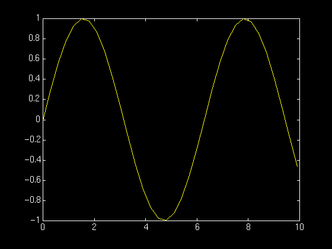

help helpdesk
: (colon) linspace
size plot
print diary
zeros ones
eye xlabel
ylabel title
sin exp
+,-,* ’ (transpose)
\ (backslash) end (as in x(2:end-1))
Start Matlab
To start matlab, simply type Matlab at the Unix prompt. Matlab should then
start, and you get the Matlab prompt, >>.
The most important commands in Matlab are:
• help --The command gives you help inside Matlab.
• helpwin --The command gives you a separate window with the help texts
• helpdesk --The command starts Netscape and gives you access to the extensive HTML help that comes with Matlab.
If you type in help helpdesk at the Matlab prompt, you get:
HELPDESK Comprehensive hypertext documentation and troubleshooting.
+HELPDESK loads the main MATLAB Help Desk page into the Web browser.
: (colon)
Matlab doc about : (colon)
The : can be used in two ways:
First way:
To create sequences and for indexing.
x= 1:10
gives the sequence
1 2 3 4 5 6 7 8 9 10
The other way:
Using the colon is to gain access to all rows or columns of a matrix.
A(1,:) means: the 1st row of A and all columns.
A(:, 2) means: all rows of A, and the 2nd column.
end
The keyword end is useful for indexing (and other things).
x = 1:10;
x(3:end) = 7
1 2 7 7 7 7 7 7 7 7
3:end -- refers to elements 3 to the end of x. You can also use e.g.
end - 1 -- refer to the second last element of x.
’ (transpose)
Matlab doc about ’ (transpose)
Syntax:
B = A.'
B = transpose(A)
Description:
B = A.' returns the nonconjugate transpose of A, that is, interchanges the row and column index for each element.
If A contains complex elements, then A.' does not affect the sign of the imaginary parts.
For example, if A(3,2) is 1+2i and B = A.', then the element B(2,3) is also 1+2i.
Examples:
(A) Real number example
Create a matrix of real numbers and compute its transpose.
B has the same elements as A, but the rows of B are the columns of A
and the columns of B are the rows of A.
A = magic(4)
A = 4×4
16 2 3 13
5 11 10 8
9 7 6 12
4 14 15 1
B = A.'
B = 4×4
16 5 9 4
2 11 7 14
3 10 6 15
13 8 12 1
(B) Complex number example
Create a matrix containing complex elements and compute its nonconjugate transpose.
B contains the same elements as A, except the rows and columns are interchanged.
The signs of the imaginary parts are unchanged.
A = [1 3 4-1i 2+2i; 0+1i 1-1i 5 6-1i]
A = 2×4 complex
1.0000 + 0.0000i 3.0000 + 0.0000i 4.0000 - 1.0000i 2.0000 + 2.0000i
0.0000 + 1.0000i 1.0000 - 1.0000i 5.0000 + 0.0000i 6.0000 - 1.0000i
B = A.'
B = 4×2 complex
1.0000 + 0.0000i 0.0000 + 1.0000i
3.0000 + 0.0000i 1.0000 - 1.0000i
4.0000 - 1.0000i 5.0000 + 0.0000i
2.0000 + 2.0000i 6.0000 - 1.0000i
\ (backslash) -- Solve systems of linear equations Ax = B for x
Left division vs right division at Matlab
Matlab doc for \ (backslash)
These two operators differ from each other
(A)Using numbers
The right division will be the conventional division we all day make use of, so
8/4 =2
Contrary to the right division, the left division reverse the division, meaning
8\4=4/8 = 0.5
(B)Matrix division in
(1) The right Matrix divide
Let’s consider two Matrices A and B
Using the right division:
Matlab code:
A=[1 2 ; 2 2];
B=[3 2 ; 1 1];
A/B % You can also use A*inv(B)
Result as:
(2) The left Matrix divide
The left matrix divide is roughly the same as:
Which leads to a complete different result from the preceding operator.
This technique can be used to quickly compute the solution of the equation:
Matlab code:
A=[1 2 ; 2 2];
B=[3 2 ; 1 1];
A\B % You can also use inv(A)*B
Result as:
The most common mistake in Matlab
Confusing row and column vectors!!
Row or Column Vectors in Matlab
We normally think of a vector as just a vector, but Matlab thinks of it as a matrix.
So the question is:
is the vector an n-by-1 matrix or an 1-by-n matrix?
For example, let A = [1, 2; 3, 4]; and b = [1, 0];.
Then Matlab will respond to the command A*b by:
??? Error using ==> *
Inner matrix dimensions must agree.
because b is of the size 1-by-2 and not 2-by-1 as it should be.
Remember that size(b) gives you the size. You can fix this by using any of the following:
• Typing b in again, now as a column vector: b = [1; 0];
• Transposing b by using the ´transpose operator: b = b’;.
• Using the colon: b(:) returns a column vector, so b = b(:); also does the trick.
Create your own functions
Matlab doc about create your own functions
Suppose you want to create a function called myfirst
that accepts two matrices as input arguments and returns their sum.
Then you would have to put these commands:
function sum = myfirst(v, w)
% sum the two inputs
sum = v + w;
into a file called myfirst.m in your working directory.
Once you have saved it, you can invoke the function:
myfirst(1, 0)
myfirst([1, 2], [3, 4])
If you look back at the function that you saved in myfirst.m, the first line:
function sum = myfirst(v, w)
tells Matlab that your function should return the variable sum, that its name is
myfirst, and that it accepts two input arguments.
Finally, Matlab will print out that percented first line any time you say help myfirst.
Create your own scripts
Introduction of m-files
You should also try to put the following into a file called, say, firstscript in
your working directory:
A = eye(3);
b = ones([3, 1]);
x = A\b;
and then type firstscript at the Matlab prompt. This simply runs the com�mands in the file.
How to run the m-file?
After the m-file is saved with the name filename.m in the current MATLAB folder or directory,
you can execute the commands in the m-file by simply typing filename at the MATLAB command prompt.
If you don't want to run the whole m-file,
you can just copy the part of the m-file that you want to run and paste it at the MATLAB prompt.
Sin
To make a graph of y = sin(t) on the interval t = 0 to t = 10
we do the following:
>> t = 0:.3:10;
>> y = sin(t);
>> plot(t,y)
Here is the result:

The command t = 0:.3:10; defines a vector with
components ranging from 0 to 10 in steps of 0.3.
The y = sin(t); defines a vector whose components are sin(0),
sin(0.3), sin(0.6), etc. Finally, plot(t,y) use
the vector of t and y values to construct the graph.
Back to top
1. Generate a plot of the function sin on the interval [-1, 1] with an appropriate title. Turn in the figure together
with the commands you used to generate the figure.
Answer:
>> t=-1:.2:1;
>> plot(t,sin(t));
>> xlabel('t');
>> ylabel('sin(t)');
>> title ('y=sin(t)');
% generate pdf file for the figure
>> print -dpdf myfirstgraph.pdf
>> print -dps myfirstgraph.ps
2. Find the solution to the following 20-by-20 system of equations. Turn in
your code and the output.
[Note: All entries in the matrix not explicitly mentioned are meant to be
zero].
Answer:
>> A=ones(20,20);
>> B=[17;0;0;0;0;0;0;0;0;0;0;0;0;0;0;0;0;0;0;0];
>> for r=1:19
A(r,20)=0
>> end
>> x=A\B
Warning: Matrix is singular to working precision.
x =
NaN
NaN
NaN
NaN
NaN
NaN
NaN
NaN
NaN
NaN
NaN
NaN
NaN
NaN
NaN
NaN
NaN
NaN
-Inf
-17
3. Create a Matlab function called ssolve that:
(a) Accepts three parameters, a, b, and n, in that order.
(b) Returns the solution to the following n by n system:
as a column vector.
[Note: All entries in the matrix not explicitly mentioned are meant to be
zero].
Answer:
function solution=ssolve(a,b,n)
A=ones(n,n);
B=ones(n,1);
for r = 2:n
B(r) = r;
end
B(n-1)=0;
A(1,2)=a;
A(20,1)=b;
A(20,2)=b;
A(20,20)=b;
% solution=A\B; this returns Warning: Matrix is singular to working precision.
solution=B\A;
4. Turn in a printout of the function ssolve and plots of the vectors
(a) ssolve(10, 0.1, 30)
(b) ssolve(2, -0.05, 50)
with the appropriate titles. Also turn in the code that generated these
figures.
Answer:
(a)
>> x=ssolve(10,0.1,30);
>> plot(x);
>> xlabel('x');
>> ylabel('ssolve(10,0.1,30)');
>> title('graph of ssolve(10,0.1,30)');
>> print -dps ssolve-30.ps
(b)
>> x=ssolve(2, -0.05, 50);
>> plot(x);
>> xlabel('x');
>> ylabel('ssolve(10,0.1,30)');
>> title('graph of ssolve(10,0.1,30)');
>> print -dps ssolve-50.ps